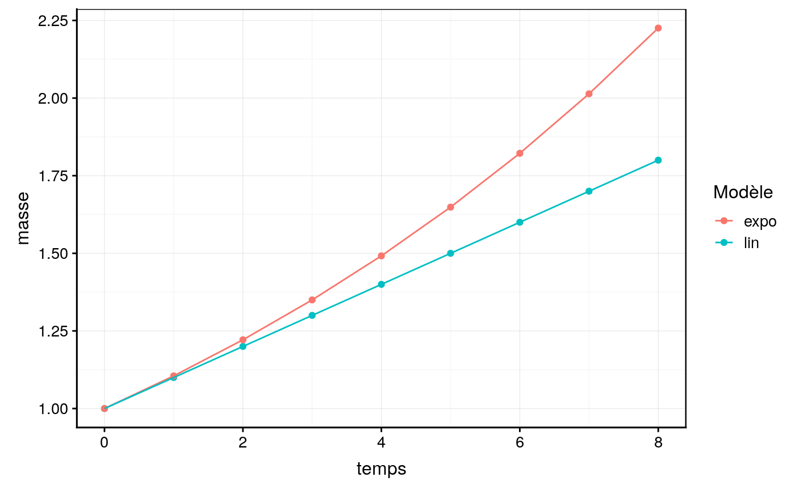

growth_rate_french.RmdLa croissance des coraux peut être déterminée à partir de la masse squelettique (obtenu par conversion de la masse immergée (Jokiel, Maragos, and Franzisket 1978)).
Sipkema et al. (2006) ont mis en évidence plusieurs modèles de croissace sur différentes espèces d’éponges. Ces modèles semblent être également valable pour les coraux dont le modèle linéaire ou encore le modèle exponentiel (Osinga et al. 2011).
Le premier modèle est le modèle de croissance linéaire suivant l’équation :
\[X_t = X_0 + kt\]
avec \(X_t\) étant la masse au temps t, \(X_0\) la masse initial au temps 0, \(k\) la constante de croissance linéaire et \(t\) le temps
Un second modèle est le modèle de croissance exponentielle suivant l’équation suivante :
\[X_t = X_0 \times e^{bt}\]
avec \(X_t\) étant la masse au temps t, \(X_0\) la masse initial au temps 0, \(b\) la constante de croissance exponentielle et \(t\) le temps.
Osinga et son équipe (2011) émettent l’hypothèse suivante que les espèces branchues vont avoir une développement de type exponentielle alors que les espèce encroutante vont avoir une croissance linéaire.
Partons d’un exemple fictif pour illustrer ces deux situations, avec un organisme de 1 grammes avec un taux de croissance linéaire et exponentiel de 0.1.
w_ini <- 1
coef <- 0.1
example <- tibble::tibble(
temps = c(0:8, 0:8),
mod = c(rep("lin", 9), rep("expo", 9)),
masse = dplyr::case_when(mod == "lin" ~ w_ini + (coef*temps),
mod == "expo" ~ w_ini*exp(coef*temps)))
chart::chart(example, masse~temps %col=% mod) +
ggplot2::geom_point() +
ggplot2::geom_line() +
ggplot2::labs( color = "Modèle")
Jokiel, Paul L., JE Maragos, and L Franzisket. 1978. “Coral growth: buoyant weight technique.” In Coral Reefs: Research Methods, edited by Bernan Associates, 541. October. UNESCO.
Osinga, Ronald, Miriam Schutter, Ben Griffioen, René H Wijffels, Johan A J Verreth, Shai Shafir, Stéphane Henard, Maura Taruffi, Claudia Gili, and Silvia Lavorano. 2011. “The biology and economics of coral growth.” Marine Biotechnology (New York, N.Y.) 13 (4). Springer-Verlag: 658–71. https://doi.org/10.1007/s10126-011-9382-7.
Sipkema, Detmer, Nejla A.M. Yosef, Marcin Adamczewski, Ronald Osinga, Dominick Mendola, Johannes Tramper, and René H. Wijffels. 2006. “Hypothesized Kinetic Models for Describing the Growth of Globular and Encrusting Demosponges.” Marine Biotechnology 8 (1): 40–51. https://doi.org/10.1007/s10126-005-5002-8.